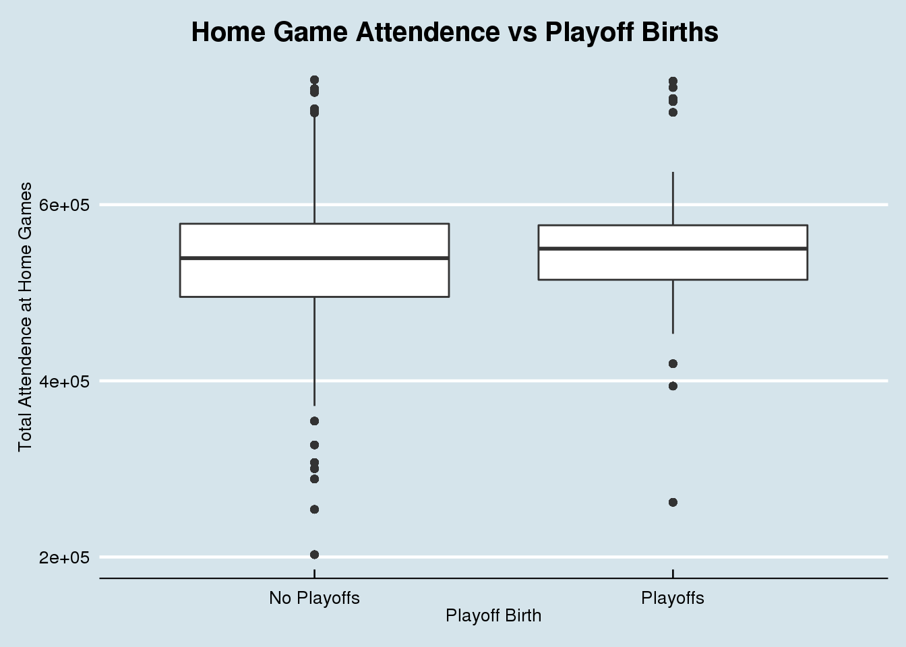
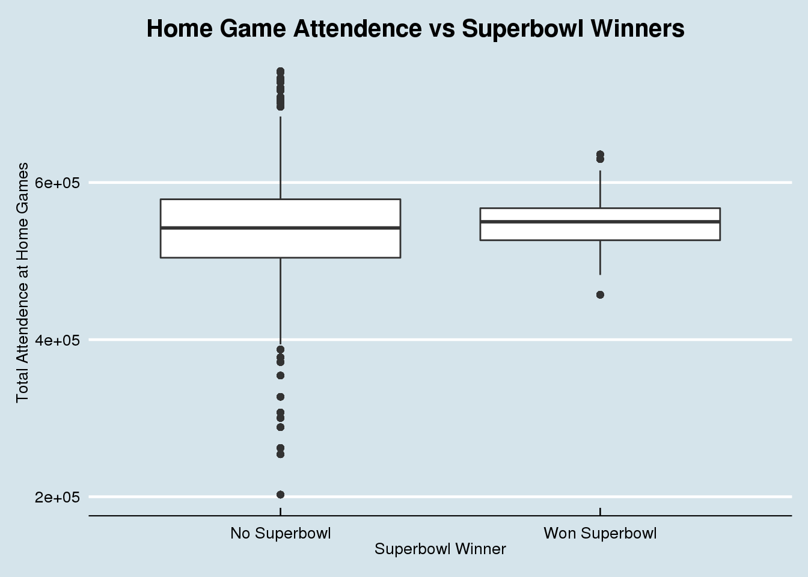

dat <- attendance %>%
left_join(standings, by = c("team", "team_name", "year"))ggplot(dat, aes(x = wins, y = home)) +
geom_point(aes(color = playoffs)) +
geom_smooth(method = "lm") +
labs(x = "Wins", y = "Total Attendence at Home Games") +
ggtitle("Home Game Attendence vs Wins and Playoff Births") +
theme_economist() +
theme(plot.title = element_text(hjust = 0.35))
ggplot(dat, aes(x = playoffs, y = home)) +
geom_boxplot() +
labs(x = "Playoff Birth", y = "Total Attendence at Home Games") +
ggtitle("Home Game Attendence vs Playoff Births") +
theme_economist() +
theme(plot.title = element_text(hjust = 0.35))
ggplot(dat, aes(x = sb_winner, y = home)) +
geom_boxplot() +
labs(x = "Superbowl Winner", y = "Total Attendence at Home Games") +
ggtitle("Home Game Attendence vs Superbowl Winners") +
theme_economist() +
theme(plot.title = element_text(hjust = 0.35))